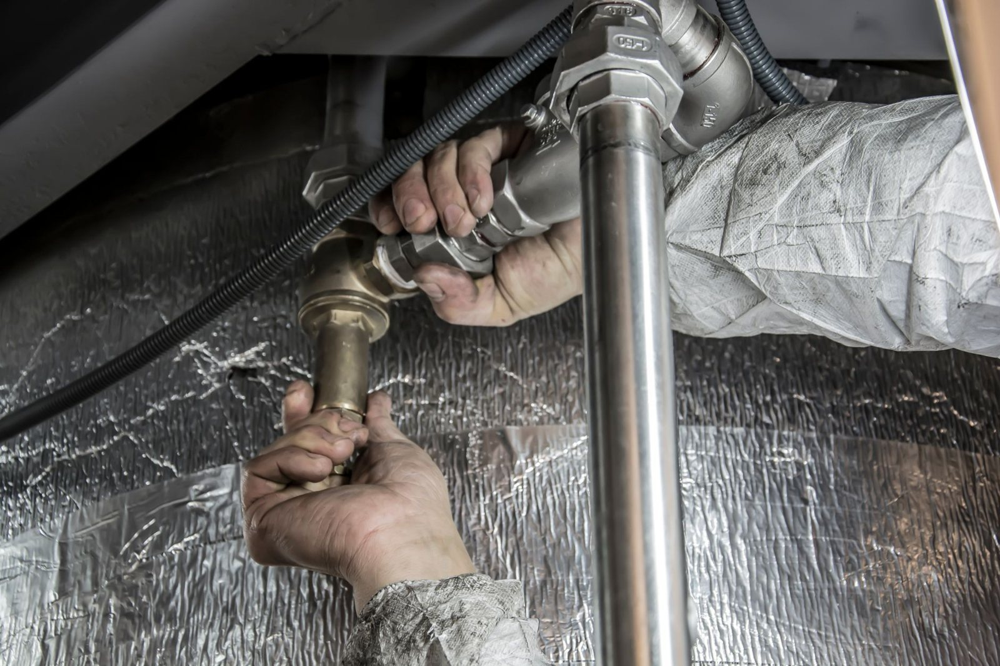

Awarie i udrażnianie
Cieknąca rura pod zlewem, mokra plama na suficie, brak wody albo zimne kaloryfery w środku zimy. Awarie instalacji wodno-kanalizacyjnych, gazowych i centralnego ogrzewania usuwamy na bieżąco, także te ukryte w ścianie.
- Pogotowie hydrauliczne i drobne naprawy
- Udrażnianie kanalizacji żmijką elektryczną
- Wymiana zaworów, baterii i odcinków rur
- Przeróbki starych instalacji
